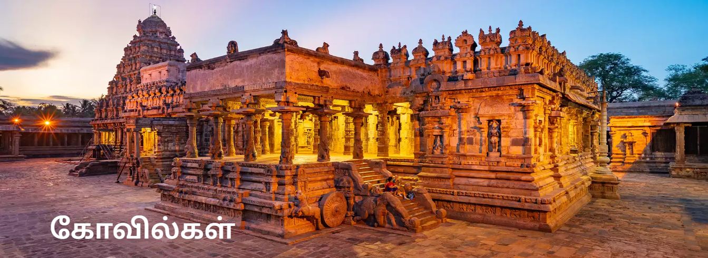
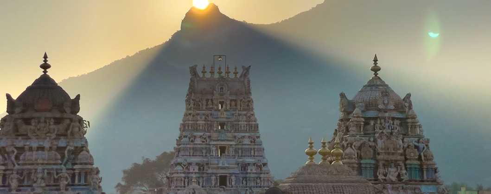
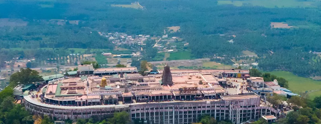
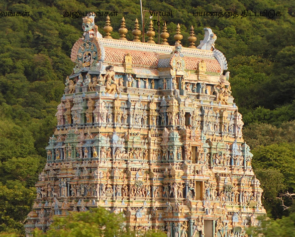
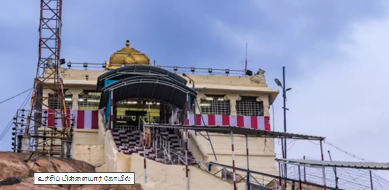
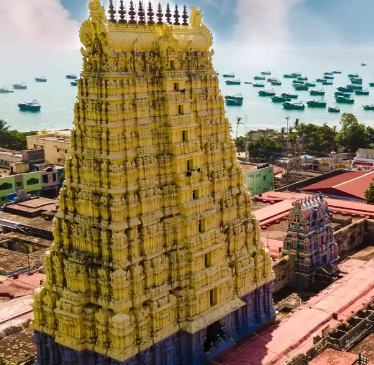

திருவண்ணாமலை மலையின் உச்சியில், புராதன உலகின் கம்பீரமான மணிமகுடமாக, அருணாசலேஸ்வரர் கோயில் உள்ளது. அதன் உயரமான இருப்பு ஓங்குதாங்காக நிற்கிறது. உங்கள் மதிமயக்கும் ஆரவார பிரம்மாண்டத்துடன் வானத்தை நோக்கிச் செல்கிறது. இது கல்வெட்டு மற்றும் கட்டிடக்கலையின் தலைசிறந்த படைப்பாகும்.

மேலும் அறிய.....திண்டுக்கல் மாவட்டத்தில் உள்ள பழனி நகரில் உள்ள அருள்மிகு தண்டாயுதபாணி சுவாமி திருக்கோயில் இந்தியாவிலேயே மிகவும் செல்வச் செழிப்பு மிக்க கோவில்களில் ஒன்றாகும். கோயம்புத்தூருக்கு தென்மேற்கே 100 கிலோமீட்டர் தொலைவிலும், மதுரைக்கு வடமேற்கிலும் அமைந்துள்ள இக்கோயில் முருகப்பெருமானின் ஆறு சிலைகளில் ஒன்றாகக் கருதப்படுகிறது. கோயிலுக்குச் செல்ல மலைகளின் கீழ்நோக்கி 670 படிகள் உள்ளன. பக்தர்கள் யானைப்பாதை, வின்ச் மற்றும் ரோப்வே மூலம் இறைவனின் இருப்பிடத்தை அடையலாம்.

மேலும் அறிய.....இயற்கை எழில் கொஞ்சும் ஒரு மலை பின்புலத்தில் அமைந்துள்ள அழகர்கோயில் ஆலயமானது மதுரையில் உள்ள முக்கிய தலங்களில் ஒன்றாகும். கள்ளழகர் என்ற பெயரில் வழங்கப்படும் மூலவர் கொண்ட இக்கோயில், பாண்டிய தேசத்தில் அமைந்துள்ள பெருமாளுக்கு உரிய 108 திவ்ய தேசங்களில் ஒன்றாகும்.

மேலும் அறிய.....தென்னிந்திய கோவில் கட்டிடக்கலையின் அழகு மற்றும் பிரம்மாண்டத்திற்கு ஒரு அற்புதமான சான்றாக இருக்கும் கம்பீரமான உச்சிப் பிள்ளையார் கோவிலை பாருங்கள். தமிழ்நாட்டின் மையப்பகுதியில் அமைந்திருக்கும், இந்த மறைக்கப்பட்ட ரத்தினம், ஒரு பாறைப் பகுதியின் மீது பெருமையுடன் நிற்கிறது. சுற்றியுள்ள நிலப்பரப்பில் இருந்து உயர்ந்து நிற்கிறத. இது பிராந்தியத்தின் வளமான வரலாறு மற்றும் கலாச்சாரத்தைப் பற்றி பேசுகிறது.

மேலும் அறிய.....கோயிலின் பின்னணியில் உள்ள புராணக்கதை இந்திய இதிகாசமான ராமாயணத்தில் இருந்து ராமருடன் தொடர்புடையது. ராமர், அசுர அரசன் ராவணனை தோற்கடித்த பிறகு, பிராயச்சித்தத்தின் ஒரு பகுதியாக சிவபெருமானை வழிபட விரும்பியதாக நம்பப்படுகிறது. காசியில் இருந்து தனக்கு ஒரு லிங்கத்தைக் கொண்டு வருமாறு அனுமனிடம் கேட்கிறார். ஹனுமான் திரும்பி வருவதை தாமதப்படுத்தியபோது, சீதா தேவி மணலைக் கொண்டு சிவலிங்கத்தை உருவாக்கினார், இதனால் ராமர் பிரார்த்தனை செய்தார். ராமலிங்கம் என்று அழைக்கப்படும் அதே சிவலிங்கம் இப்போது ராமநாதசுவாமி கோவிலில் வழிபடப்படுவதாக நம்பப்படுகிறது. கைலாசத்திலிருந்து அனுமன் கொண்டு வந்த லிங்கம் விஸ்வலிங்கம் என்று அழைக்கப்படுகிறது.

மேலும் அறிய.....